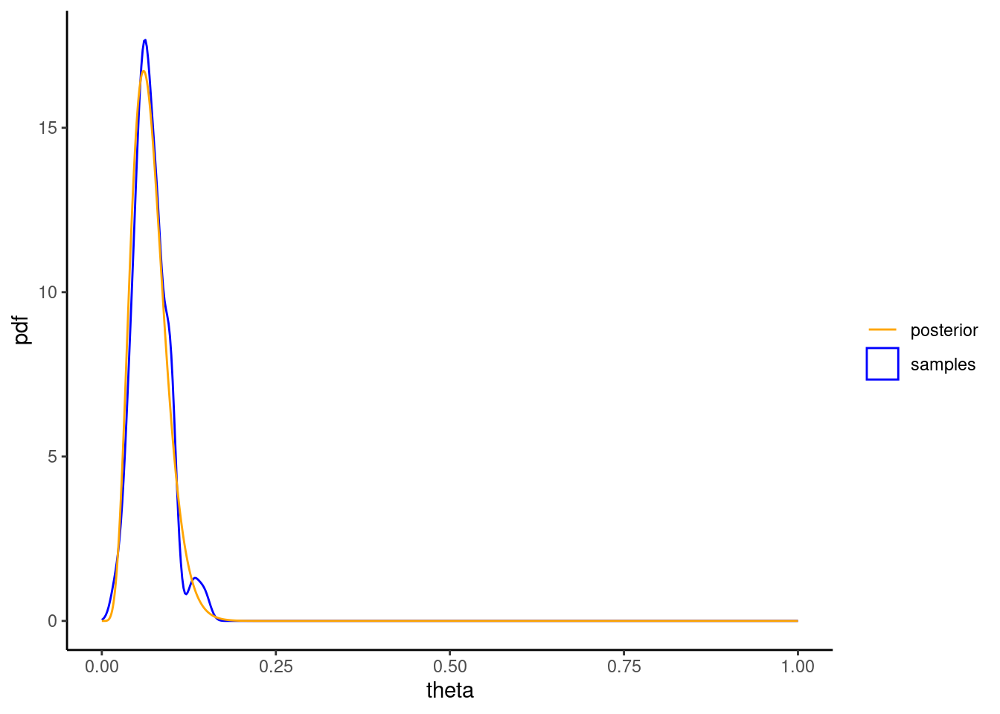

a <- 1
b <- 1
N <- 100
prior_predictive <- replicate(10000, {
theta <- rbeta(1, a, b)
rbinom(1, N, theta)
})
mean(prior_predictive)[1] 50.328Imagine once again that you are investigating the occurrence of Lyme disease in the UK. This is a vector-borne disease caused by bacteria of the species Borrelia which is carried by ticks. (The ticks pick up the infection by blood-feeding on animals or humans that are infected with Borrelia.) You decide to estimate the prevalence of these bacteria in ticks you collect from the grasslands and woodlands around Oxford.
You decide to use sample sizes of 100 ticks, out of which you count the number of ticks testing positive for Borrelia. You decide to use a binomial likelihood since you assume that the presence of Borrelia in one tick is independent of that in other ticks. Also, because you sample a relatively small area, you assume that the presence of Borrelia is identically distributed across ticks.
You specify a beta(1,1) distribution as a prior. Use independent sampling to estimate the prior predictive distribution (the same as the posterior predictive, except using sampling from the prior in the first step rather than the posterior), and show that its mean is approximately 50.
a <- 1
b <- 1
N <- 100
prior_predictive <- replicate(10000, {
theta <- rbeta(1, a, b)
rbinom(1, N, theta)
})
mean(prior_predictive)[1] 50.328In a single sample you find that there are 6 ticks that test positive for Borrelia. Assuming a beta(1,1) prior, graph the posterior distribution, and find its mean.
X <- 6
theta = seq(0,1,.001)
posterior_df <- data.frame(theta, pdf = dbeta(theta, a + X, b + N - X))
posterior_df |>
ggplot() +
geom_line(aes(x=theta, y=pdf)) +
theme_classic()(posterior_mean = (a + X)/(a + X + b + N - X))[1] 0.06862745Generate 100 independent samples from this distribution using your software’s in built (pseudo-)random-number generator. Graph this distribution. How does it compare to the PDF of the exact posterior?
posterior_samples <- rbeta(N, a + X, b + N - X)
posterior_df |>
ggplot() +
geom_density(data=tibble(theta =posterior_samples), aes(x=theta, color="samples")) +
geom_line(aes(x=theta, y=pdf, color="posterior")) +
scale_color_manual(name = "", values = c("samples" = "blue", "posterior" = "orange"))+
theme_classic() +
guides(color = guide_legend(override.aes = list(linetype = c(1, 1), shape = c(NA, 1))))
Determine the effect of increasing the sample size on predictive accuracy using the independent sampler to estimate the posterior mean. (Hint: for each sample you are essentially comparing the sample mean with the true mean of the posterior.)
Estimate the variance of the posterior using independent sampling for a sample size of 100. How does your sample estimate compare with the exact solution?
sample_from_posterior <- function(n_samples, times) {
replicate(times, {
var(rbeta(n_samples, a + X, b + N - X))
})
}
posterior_variance <- (a + X)*(b + N - X)/((a + X + b + N - X)^2*(a + X + b + N - X + 1))
tibble(var = sample_from_posterior(100, 2000)) |> ggplot() +
geom_histogram(aes(x=var), fill="orange", color="black", binwidth = 5e-5, boundary = 0) +
geom_vline(xintercept = posterior_variance, color = "blue", linewidth=1) +
scale_y_continuous(expand = c(0,0)) +
scale_x_continuous(breaks = seq(0.0004,0.001,0.0002), labels = function(x) format(x, scientific = FALSE)) +
theme_classic() +
labs(x="estimated variance", y="frequency")Create a proposal function for this problem that takes as input a current value of \(θ\), along with a step size, and outputs a proposed value. For a proposal distribution here we use a normal distribution centred on the current \(θ\) value with a standard deviation (step size) of 0.1. This means you will need to generate a random \(θ\) from a normal distribution using your statistical software’s in-built random-number generator.
fproposal <- function(theta, step_size = .1) {
rnorm(1, mean = theta, sd = step_size) %% 1
}Create the accept–reject function of Random Walk Metropolis that accepts as inputs both \(θ_current\) and \(θ_proposed\) and outputs the next value of \(θ\).
faceppt <- function(current, proposed) {
r <- min(1, dbeta(proposed, a + X, b + N - X) / dbeta(current, a + X, b + N - X))
ifelse(runif(1,0,1) < r, proposed, current)
}Create a function that combines the previous two functions, so it takes as input a current value of \(θ_current\) , generates a proposed \(θ_proposed\) , and updates \(θ_current\) in accordance with the Metropolis accept–reject rule.
fnext <- function(current, step_size=.1) {
faceppt(current, fproposal(current, step_size))
}Create a fully working Random Walk Metropolis sampler. (Hint: you will need to iterate the last function. Use a uniformly distributed random number between 0 and 1 as a starting point.)
fwalk <- function(init = runif(1,0,1), steps=100, step_size=.1) {
current <- init
values = replicate(steps, NA)
for (step in 1:steps) {
values[step] = current
current <- fnext(current, step_size)
}
values
}For a sample size of 100 from your Metropolis sampler compare the sampling distribution to the exact posterior. How does the estimated posterior compare with that obtained via independent sampling using the same sample size?
compare_with_posterior <- function(dist, xend=.2) {
colors = c("blue", "orange","gray")
posterior_df |>
ggplot() +
geom_line(aes(x=theta, y=pdf, color="exact"), linewidth=1) +
geom_density(data=data.frame(theta = dist[[1]]), aes(x=theta, color=names(dist)[1]), linewidth=1) +
geom_density(data=data.frame(theta = dist[[2]]), aes(x=theta, color=names(dist)[2]), linewidth=1) +
theme_classic() +
scale_x_continuous(breaks = seq(0,xend,.05), limits = c(0,xend+.01), expand=c(0,0), minor_breaks = seq(0,xend,.01)) +
scale_y_continuous(breaks = seq(0,20,5), limits = c(0,20), expand=c(0,0), minor_breaks = seq(0,20,1)) +
scale_color_manual(name="", values=colors) +
guides(x = guide_axis(minor.ticks = TRUE), y = guide_axis(minor.ticks = TRUE)) +
labs(x=TeX("$\\theta$"), color = guide_legend(override.aes = list(shape = NA)))
}
dist <- list(independent = rbeta(100, a + X, b + N - X), MCMC = fwalk(steps=100))
compare_with_posterior(dist)Run 1000 iterations, where in each iteration you run a single chain for 100 iterations. Store the results in a 1000 × 100 matrix. For each iterate calculate the sample mean. Graph the resulting distribution of sample means. Determine the accuracy of the MCMC at estimating the posterior mean.
Graph the distribution of the sample means for the second 50 observations of each chain. How does this result compare with that of the previous question? Why is there a difference?
Decrease the standard deviation (step size) of the proposal distribution to 0.01. For a sample size of 200, how does the posterior for a step size of 0.01 compare to that obtained for 0.1?
plot_chains <- function(chains, colors) {
step <- 1:length(chains[[1]])
df <- tibble(step)
for (i in 1:length(chains)) {
df[(names(chains))[i]] <- chains[[i]]
}
names(colors) <- names(chains)
df |> pivot_longer(cols=-step) |> ggplot() +
geom_line(aes(x=step, y=value, color=name)) +
theme_classic() +
labs(y=TeX("$\\theta$"), x="step #") +
scale_color_manual(name="", values=colors)
}
dist <- list(
"step size = 0.1" = fwalk(init=.9, steps=200),
"step size = 0.01" = fwalk(init=.9,steps=200, step_size = 0.01)
)
colors <- c("grey", "orange")
p1<-compare_with_posterior(dist, xend=.4)
p2<-plot_chains(dist, colors)
p1+p2Increase the standard deviation (step size) of the proposal distribution to 1. For a sample size of 200, how does the posterior for a step size of 1 compare to that obtained for 0.1?